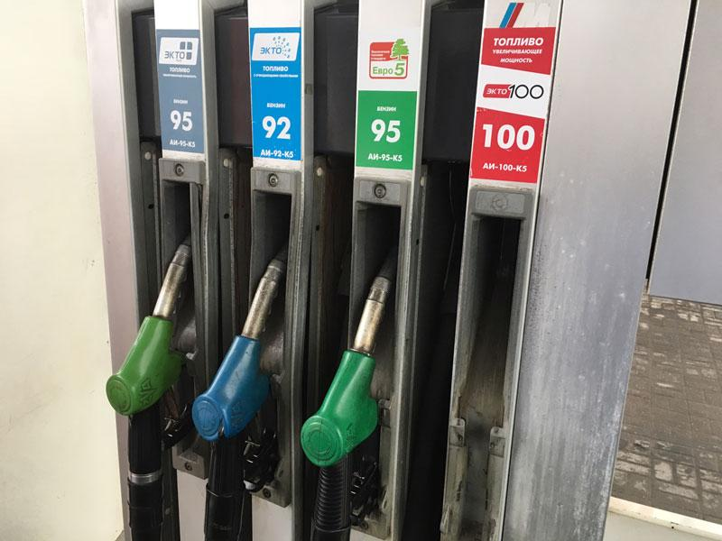

"Лукойл" не ждет резкого повышения цен на бензин Бизнес Журнал Федеральный
 Facebook Twitter Instagram
Facebook Twitter Instagram
НОМЕРА ЖУРНАЛА РЕГИОНЫ Федеральный Республика Башкортостан Белгородская область Воронежская область Калужская область Костромская область Краснодарский край Кузбасс Курская область Липецкая область Московская область Омская область Пензенская область Саратовская область Ставропольский край Тамбовская область Республика Татарстан Томская область Тульская область Тюменская область Ханты-Мансийский АО — Югра ПОДПИСКА ФРАНЧАЙЗИНГ КОНТАКТЫ
Лукойл не ждет резкого повышения цен на бензин
Главная / Категория / Лукойл не ждет резкого повышения цен на бензинЛукойл не ждет резкого повышения цен на бензин
19/03/2019 11:55 by"Лукойл" ожидает роста цен на бензин в 2019 году не выше уровня инфляции, заявил журналистам глава компании Вагит Алекперов по итогам выступления в Госдуме на заседании внутрифракционной группы фракции "Единая Россия", передает RNS .
НОВОСТЬ ДНЯ
Росстат сообщил о неожиданном скачке промышленного роста
"Я не думаю, что цена будет резко возрастать. Учёт поквартальной инфляции будет заложен, конечно, в стоимость литра бензина, но не более того", сказал он.
В.Алекперов добавил, что компания регулярно ведет обсуждения этой темы с правительством РФ.
Агентство напоминает: ранее Счетная палата РФ в своем заключении на проект бюджета на 2019 год и плановый период 2020 и 2021 годов указала, что повышение акцизов на бензин и дизельное топливо в России с 1 января 2019 года может привести к резкому росту розничных цен на топливо.
Новости
ДОЧЬ ГЛАВЫ РОСНЕФТИ УЧРЕДИЛА СУДОХОДНУЮ КОМПАНИЮ
27/09 15:19Минпромторг России подписал СПИК с Haval
27/09 14:05АНАЛИТИК ПРОГНОЗИРУЕТ МАССОВЫЕ УВОЛЬНЕНИЯ
27/09 10:45МОСКВА ПОДНЯЛАСЬ НА 9 СТРОЧЕК В РЕЙТИНГЕ ФИНЦЕНТРОВ
27/09 10:11МИНЭК ПРОГНОЗИРУЕТ КУРС РУБЛЯ
27/09 09:26ФИКСИРУЮТ СТРЕМИТЕЛЬНЫЙ РОСТ ОБОРОТОВ МАЛОГО И СРЕДНЕГО БИЗНЕСА
27/09 08:20МИНИСТРЫ ЭНЕРГЕТИКИ G20 ПРОВЕДУТ ВАЖНУЮ ВСТРЕЧУ
27/09 08:01ПЛОЩАДЬ ОЭЗ УЗЛОВАЯ В ТУЛЬСКОЙ ОБЛ. УВЕЛИЧАТ
27/09 07:50ТРАМП ОБЕЩАЕТ ИЗБАВИТЬСЯ ОТ КИТАЙСКОЙ ЗАВИСИМОСТИ
27/09 07:11 Все новостиКатегории статей
Аналитика Точки роста Персона номера Вокруг бизнеса События Рейтинги Фотогалерея Партнеры Механика бизнеса Национальные проекты 2019-2024Механика бизнеса
Национальные проекты 2019-2024
Комментарии
2019 © business-magazine.online
«Сетевое издание «Федеральный бизнес журнал»
Телефон редакции: +7 495 727-01-67
Электронная почта редакции: info@business-magazine.online
Адрес редакции: 300041, Тульская обл., г. Тула, пр-т Ленина, д. 57, оф. 311
Учредитель ООО "РЕГИОНАЛЬНЫЕ НОВОСТИ", главный редактор - Тепленин Тимур Борисович.
Свидетельство о регистрации СМИ ЭЛ № ФС 77 - 73398 от 03.08.2018 г. Выдано Федеральной службой по надзору в сфере связи, информационных технологий и массовых коммуникаций.
При использовании любого материала с данного сайта гипер-ссылка на Сетевое издание «Федеральный бизнес журнал» обязательна.
16+
